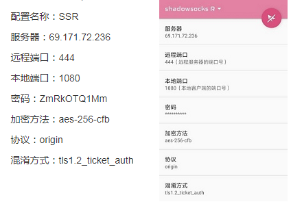
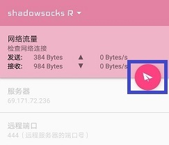
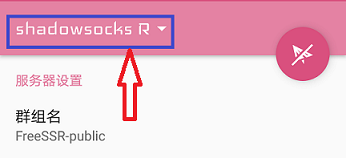
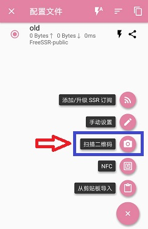
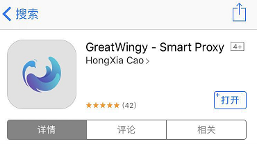
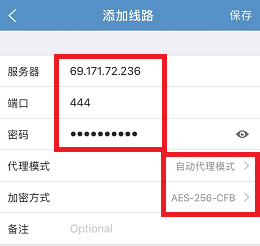
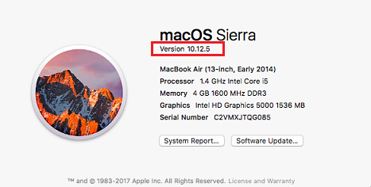
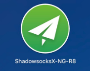
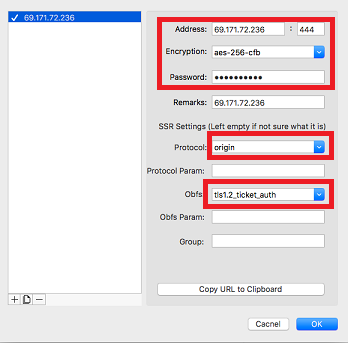

这里介绍Windows,安卓手机/平板,苹果手机/平板和苹果电脑的科学上网方法。
本方法是免费试用版，本服务器会不定期维护，在使用过程中有任何问题，请用微信扫描二维码进群讨论。
如需稳定版，请联系QQ 23665722 或者微信 freeskyv
使用本方法之前，先退出国产杀毒软件。比如360，金山毒霸之类的。
一、Windows客户端 下载
下载后解压，如果没有压缩软件，请下载
如果是WindowsXP及以下系统，请双击 ShadowsocksR-dotnet2.0.exe
如果是Windows 7及以上系统，请双击 ShadowsocksR-dotnet4.0.exe
然后打开浏览器就可以访问google, youtube之类的网站了。
二、安卓手机/平板 客户端 下载1 或者 下载2
下载安装完成后，修改客户端配置信息。配置方式有两种：手工配置和扫描配置
1.手工配置

密码：4nzRgVnCcX
如上图配置好之后，点击右上角画斜杠的纸飞机，变成下图的样子

然后打开手机浏览器就可以访问google, youtube之类的网站了。
2.扫码配置
1)打开SSR软件，点击左上角的Shadowsocks R

2)点击右下角 加号+

3)点击扫描二维码

三、苹果手机iPhone/平板iPad
App Store 搜索 GreatWingy,找到 GreatWingy-Smart Proxy,免费下载。

打开软件，右上角点击 +（加号），填写配置信息并保持。

密码：4nzRgVnCcX
然后点击节点信息连接，就可以访问google了。

四、苹果电脑Mac系统
点击左上角苹果图标，选择关于本机，查看系统版本

如果系统不是10.12.XX 版本，请升级。然后下载客户端
下载客户端后进行常规方式安装，或解压并安装。然后打开刚刚安装好的shadowsocksR客户端

在右上方点纸飞机图标，选择[服务器]-->[服务器设置...]，配置如下信息

地址：69.171.72.236
端口：444
加密方法：aes-256-cfb
密码：4nzRgVnCcX
协议：origin
混淆：tls1.2_ticket_auth
然后连接，就可以访问google了。